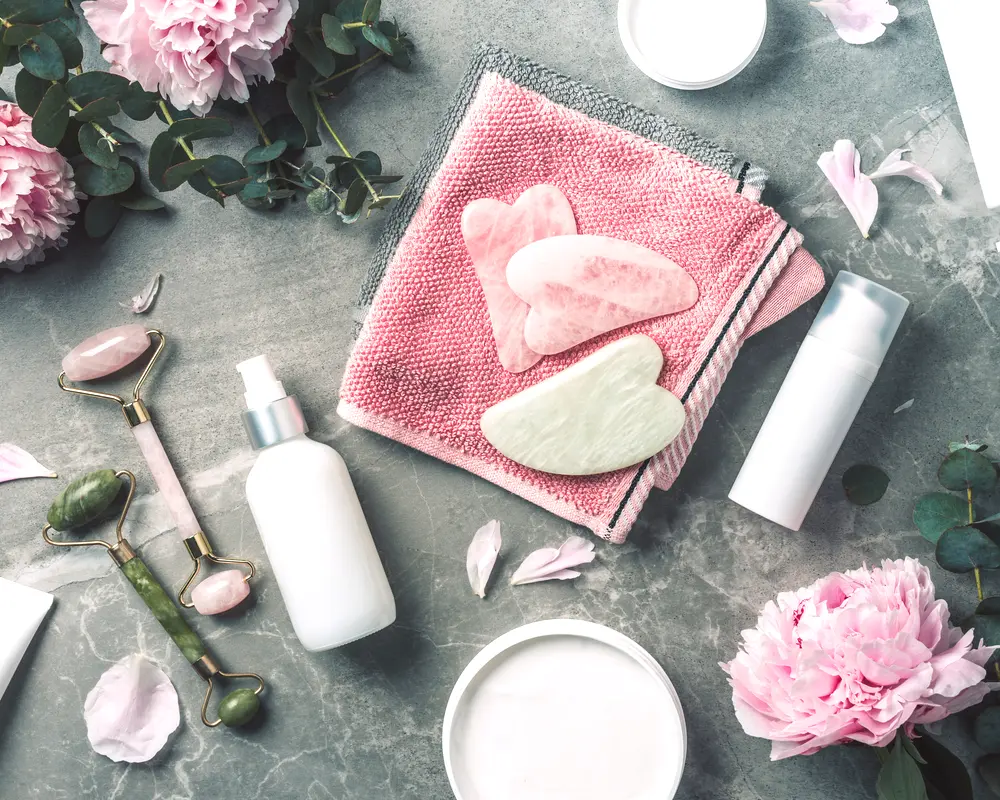

Why Some Med Spas Charge for Consultations
Yes, it is normal for a med spa to charge a consultation fee. Think of it like seeing a specialist. You are paying for a licensed professional's time and a real assessment of your skin or body. The advice itself is the service.

Why Charge a Fee at All?
Paying for a conversation can feel odd at first, but a real consult is a medical visit. A nurse practitioner, physician assistant, or doctor is blocking off time just for you. They are not just pointing at a menu. They are taking a history, examining you, and building a plan that fits your face, body, and health.
The fee also cuts down on people booking "just to ask a few things" with no plan to follow through. A clinic only has so many appointments in a day. When there is a fee, those spots are more likely to go to people who are ready to think through real options. That lets the provider focus better on each person in front of them.
It also keeps the boundary clear. The consult itself is a paid service. The clinic does not have to push a procedure just to make the visit "worth it" on their end. You are paying for an honest opinion, even if you decide not to book anything that day.
What the Fee Actually Covers
So what are you getting for your money? It is more than a quick chat.
- A professional assessment: A trained eye looking at your specific concerns, like texture changes, volume loss, or unwanted hair. They will ask about your lifestyle, health history, and what you have tried before.
- A custom plan: Based on that exam, they will suggest specific treatments. They should also tell you what is not a good idea for you, which matters just as much.
- Clear education: This is your time to ask anything. They explain how a procedure works, what results you can reasonably expect, how many sessions it might take, and what recovery looks like.
- Set-aside time: A proper consult can run 30 to 60 minutes. The fee helps make sure you get that block of focused attention.
There is real work involved in putting together a safe, realistic plan, which is why this is different from a quick sales talk. It is a full appointment where you have space to learn exactly what to expect and talk through options. You should leave feeling like you understand your choices.
When a Fee Is a Good Sign
Often, a consultation fee is a green flag. It usually means the clinic treats the advice as its own service, not just a way to get you in the door. The visit can feel calmer and more educational, with less pressure to book something on the spot.
Many clinics that focus on long term patients work this way. They care less about running through as many people as possible and more about building a steady relationship based on trust and results over time. The first consultation is the starting point for that.
A fee based consult buys you advice. A free consult might be selling you a procedure. Both can be fine, as long as you know which one you are in.
It is also common for clinics to apply the consultation fee as a credit toward a treatment you book later. That setup is usually fair. It makes the fee feel more like a deposit for your future care instead of a separate charge that goes nowhere.
Are Free Consultations a Red Flag?
Not by themselves. Plenty of good med spas offer free consults. It is just a different way of doing business. With a free visit, the clinic is counting on you booking something for that time to make sense for them.
Sometimes this can add pressure. The person you meet may be a coordinator or consultant whose main job is sales. The talk might lean more toward plugging you into a pre-set package and less toward a slow, detailed medical workup. Not always, but it happens.
If you go to a free consult, notice how it feels. Do they listen? Do they bring up risks, trade offs, and other options? Or does it jump straight to one big, expensive treatment without a solid reason? A good provider, even in a free visit, puts your safety and your goals first.
Making the Most of Your Consultation
Paid or free, your aim is the same: clear, honest information. Treat it like any other medical appointment. Show up on time with a clean face if you can and a short list of questions. Be ready to share your health history, medications, supplements, and any past cosmetic work.
You do not have to say yes to anything that day. A clinic that is a good fit will be fine with you taking time to think. Use the visit to get professional guidance that fits you. For broad health reading, sites like Harvard Health are useful, but for choices about your own face and body, you need someone licensed who can actually see you.
Ask clearly whether the consultation fee can be applied to a later service so you are not guessing. When you understand the policy and feel heard in the room, paying for an hour of a true expert's time can be a smart way to start. You get a plan based on training and experience, not just a script.